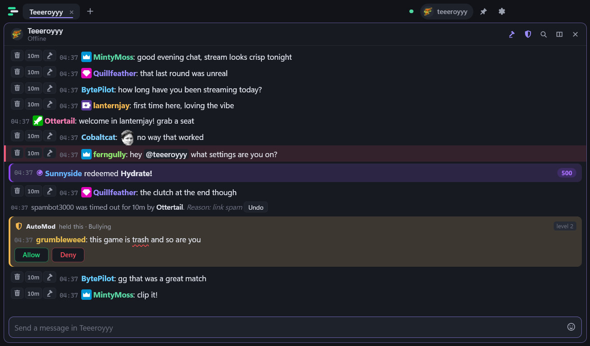
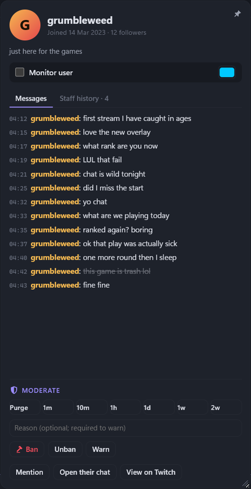
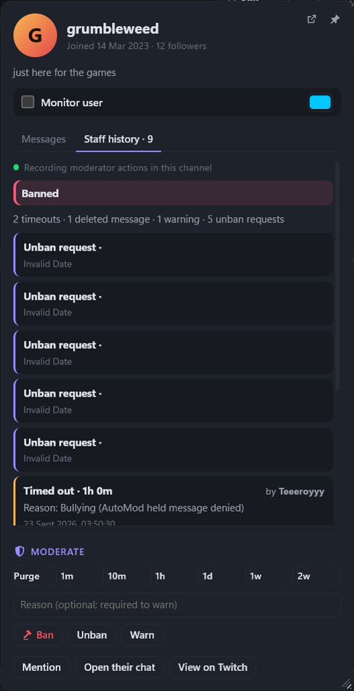

Moderation built for speed
Delete, timeout and ban buttons on every line, with Undo. Chat modes, pinnable user cards, Staff history of who did what, and Monitor user colouring. Timeout lines say which mod did it and why.
Twitch chat client for Windows
Chattler is a fast, modern Twitch chat client. It stays smooth in chats with thousands of people, and gives moderators one-click tools that keep up with the scroll.

About
Chattler started as a modern take on the classic desktop Twitch chat clients: tabs, splits, every emote set, and none of the clutter. It's built for people who watch several chats at once and for moderators who need to act in a split second while the chat flies past.
It keeps up in huge, fast chats: messages are batched and drawn only when they're on screen, and auto-scroll doesn't lose its place when a flood hits. It updates itself in the background, so you're always on the newest version.
Features
Delete, timeout and ban buttons on every line, with Undo. Chat modes, pinnable user cards, Staff history of who did what, and Monitor user colouring. Timeout lines say which mod did it and why.
Held messages show up where you're already looking, with Allow and Deny, the reason, and the flagged words underlined.
Redemptions appear in chat. In your own channel you see the reward name and cost.
Watch several chats side by side. Drag tabs to reorder, and put them along the top or down the left.
Your own list of words, with a ding, an in-chat highlight, taskbar flash and desktop notifications - each one optional.
7TV, BetterTTV and FrankerFaceZ emotes, animated and zero-width included. Switch any provider off.
Lock the window in place and keep it on top of your game, with a see-through background.
User cards
Click any name in chat to open their card. Pin it to keep it open while you watch them, resize it, and drag it anywhere - even out of the window, onto another monitor.


Themes and plugins
Chattler ships with eight themes and eight moderation plugins - and every one of them is a plain text file you can open, change or rewrite. Same for anything the community builds.
Pick one in Settings. Or write your own: a theme is a name, whether it's light or dark, and a handful of colours. Everything else is worked out for you.
theme "Seafoam"
base dark
bg #0d1a19
surface #12211f
text #dcecea
accent #4fd6c0Drop it in your themes folder, hit Reload, and it's in the gallery.
A plugin says what to look for and what to do about it. They raise alerts - they can't moderate, post, or see your login. Here's exactly what they can and can't do.
plugin "Repeat offender"
on timeout do
bump(event.user)
if count(event.user, 15 minutes) >= 3 then
alert(event.user + " keeps getting timed out", "warn")
end
endThree are on out of the box. Each one has its own settings, and its own switch.
Questions
Yes. Both are plain text files you drop in a folder - the eight themes and eight plugins Chattler ships with are exactly the same kind of file. Plugins are written in Chattscript, a small language made for this, and they can raise alerts, play chimes and count things. They cannot moderate, post messages, read your Twitch login, reach the internet or touch your files. The docs cover all of it.
Yes. Chattler is free to download and use, with no ads and no paid tiers.
Chattler has everything you expect from a desktop Twitch chat client - tabs, splits and 7TV, BetterTTV and FrankerFaceZ emotes - plus a modern design and moderation tools built for fast chats: AutoMod held messages right in the chat, timeout lines that name the moderator, a per-user staff history, and pinnable, resizable user cards.
No. Anyone can use Chattler to read and chat. Moderation tools only appear in channels where you're a moderator or the broadcaster.
The installer isn't code-signed yet, so Windows SmartScreen shows a warning for new downloads. Click More info → Run anyway. Chattler installs just for your Windows account and doesn't need admin rights.
Not yet. Chattler is for Windows 10 and 11.
Your Twitch login stays encrypted on your PC. Chattler only records your Twitch username, the app version and when you last used it, for usage statistics. Your messages are never shared. If you moderate a channel, the moderation actions you see (bans, timeouts, warnings and so on) are shared with that channel's other moderators for their Staff history. See Privacy in the user guide.
Release notes
Loading release notes…